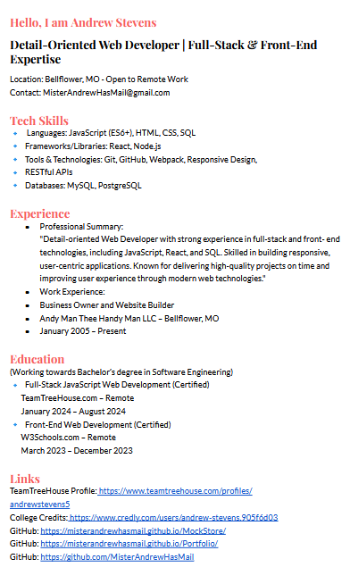

Full Stack JavaScript Developer
Job Reference's I have been a business owner for almost 20 years, a 44-year-old general contractor and handyman. Looking for a better career and that's where I found Front End Dev. & Fullstack JavaScript Tech.
I'm a certified Front End Developer with a certificate from W3schools.com and now a certified graduate of TeamTreeHouse.com FullStack JavaScript Tech Degree and pursuing a Bachelors Software Engineering Degree